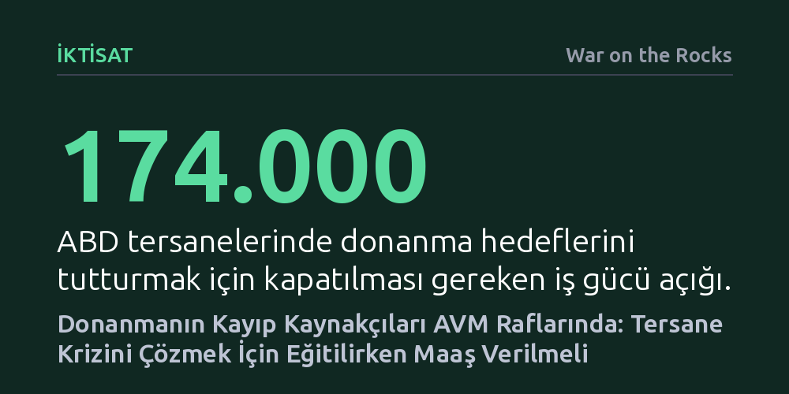

IKTISAT · War on the Rocks · 2026-10-07
ABD tersanelerindeki 174 bin kişilik iş gücü açığı, düşük ücretli çalışanların eğitim süresince gelirsiz kalmayı göze alamamasından kaynaklanıyor. Donanma, reklam bütçesini eğitim sırasında geçim maaşı ödeyen bölgesel aracılara aktarmadıkça bu krizi çözemez.
Sanayi ve savunmadaki nitelikli iş gücü krizinin asıl engelinin eğitim maliyeti değil, yetişkin çalışanların eğitim sürecindeki gelir kaybı olduğunu gösterir.

ABD Donanması'nın yeni gemi inşa planları iddialı teslimat takvimleri açıklasa da sahadaki gerçek bambaşka bir tablo ortaya koyuyor. Sayıştay raporlarına göre donanmaya savaş gemisi üreten yedi büyük tersanenin hiçbiri teslimat hedeflerini yakalayabilecek durumda değil. Bu krizin temelinde altyapı yetersizliklerinin yanı sıra yaklaşık 174 bin kişilik devasa bir iş gücü açığı yatıyor.
Büyük tersane işletmeleri nitelikli işçi bulmakta zorlandıkça, çözümü mevcut çalışanların saatlik ücretlerini artırmakta ve sektördeki tecrübeli ustaları rakiplerinden transfer etmekte arıyor. Ancak tecrübesiz işe alımlarda ilk yıl işi bırakma oranının yüzde 50 ila 60'ı bulması, tersaneleri sıfırdan çırak yetiştirmekten caydırıyor. Bu durum sektörü bir kısır döngüye sokuyor: Tersaneler yalnızca mevcut havuzdaki tecrübeli personeli birbirinin elinden kapmaya çalışırken, sisteme tabandan yeni iş gücü akışı neredeyse tamamen durmuş durumda.
Sorunun kaynağı mesleğin nihai kazancında değil. ABD'de perakende sektöründe veya marketlerde kasiyerlik yapan milyonlarca çalışan yıllık medyan 33 bin dolar civarında kazanırken, donanma destekleriyle ücretleri artırılan bir tersane kaynakçısının başlangıç maaşı 57 bin doları buluyor. Yıllık 24 bin dolarlık gelir artışı, düşük ücretli bir çalışan için hayat standardını kökten değiştirebilecek cazip bir fırsat sunuyor.
Asıl tıkanıklık, bu iki nokta arasındaki geçiş sürecinin finansmanında ortaya çıkıyor. Maaştan maaşa yaşayan bir yetişkinin kaynakçı olabilmesi için mevcut işini bırakıp 8 ila 15 haftalık yoğun bir eğitim programına girmesi gerekiyor. Donanmanın ve eyaletlerin sunduğu burslar eğitim masraflarını karşılasa bile, kurs süresince kaybedilen haftalık maaşın yerini hiçbir şey doldurmuyor. Günde sekiz saat çalışmak zorunda olan bir yetişkinin gündüz verilen meslek kurslarına katılması imkânsız hale geliyor.
Mevcut eğitim sistemi de bu kitleye uyum sağlamaktan çok uzak. Eyaletlerin çoğunda iki yıllık meslek yüksekokullarına bütçe, kayıtlı tam zamanlı öğrenci sayısına göre aktarılıyor. Sabah saat 05.00'te başlayacak ve çalışan yetişkinlerin vardiyalarına yetişmesine imkân tanıyacak özel bir ders açmak, öğrenci sayısını artırmadığı için okul yönetimleri açısından cazip bir model oluşturmuyor.
Donanma bugüne kadar iş gücü açığını kapatmak için yüz milyonlarca doları büyük reklam kampanyalarına ve meslek okullarındaki sınıf kontenjanlarına yatırdı. Örneğin sadece denizaltı iş gücü kampanyasına bir yılda harcanan yaklaşık 100 milyon dolar, ilk yılda ayrılanlar hesaba katıldığında işe başlayan her bir kişi için ortalama 10 bin dolarlık reklam maliyeti anlamına geliyor. Donanma zaten her aday için bir eğitim maaşı kadar parayı gözden çıkarıyor; fakat bu kaynağı adayın cebine koymak yerine reklam panolarına aktarıyor.
Bu açmazı aşmanın yolu, 15 haftalık eğitim sürecinde adayın geçimini sağlayacak bir "maaş köprüsü" inşa etmekten geçiyor. Haftalık 40 saatlik eğitim için saat başı 18 dolar üzerinden hesaplanan yaklaşık 11 bin dolarlık destek, asgari ücretli bir çalışanın işini bırakıp meslek değiştirmesini mümkün kılabilir. Federal hükümetin yeni başlattığı kısa eğitim bursları okul harçlarını karşılarken, donanma fonlarının bu maaş köprüsüne yönlendirilmesi gerekiyor.
Bu mekanizmayı işletebilmek için sanayi ile çalışanlar arasında köprü kuracak bölgesel aracılara ihtiyaç var. Özellikle tek başına çıraklık okulu açamayacak büyüklükteki ikinci ve üçüncü kademe tedarikçilerin taleplerini toplayan, adayları eğiten ve eğitim süresince maaşlarını ödeyen yerel aktörler, eğitim ve işe yerleştirme riskini kendi üzerine alabilir.
Tersanelerin tek ve en büyük müşterisi konumundaki Donanma, fonladığı programların kurallarını yeniden belirleme gücüne sahip. İlk adım olarak, iş gücü fonu alan tüm kurumların yerleştirdikleri kişilerin bir önceki yılki gelirlerini raporlaması zorunlu kılınmalı. Bir eğitim programı geçen yıl 50 bin dolar kazanan birini yerleştirdiyse başka bir sektörden usta çalmış demektir; ancak geçen yıl 33 bin dolar kazanan birini sisteme kazandırdıysa gerçek bir kariyer dönüşümü başarmıştır.
İkinci adım, reklam bütçelerinin doğrudan eğitim sürecindeki işçilere maaş köprüsü olarak ödenmesi ve bu desteğin mezuniyet ile istihdam başarı oranlarına bağlanmasıdır. Üçüncü adım ise merkezi çözümler yerine, New England veya New Orleans gibi tersane havzalarında yerel sanayi birlikleri ve ticaret odalarının bölgesel aracı olarak yetkilendirilmesidir.
ABD Donanması otuz yıldır meslek öğrenmeye zaten niyeti olan dar bir kitleye odaklanan programları mükemmelleştirmeye çalıştı. Oysa donanmanın ihtiyaç duyduğu bir sonraki bin kaynakçı bu havuzda değil; tersanelerden 40 mil uzaktaki bir alışveriş merkezinde kasa başında bekliyor ve bugüne kadar hiç kimse onların geçim gerçeğine uygun bir teklif sunmadı.